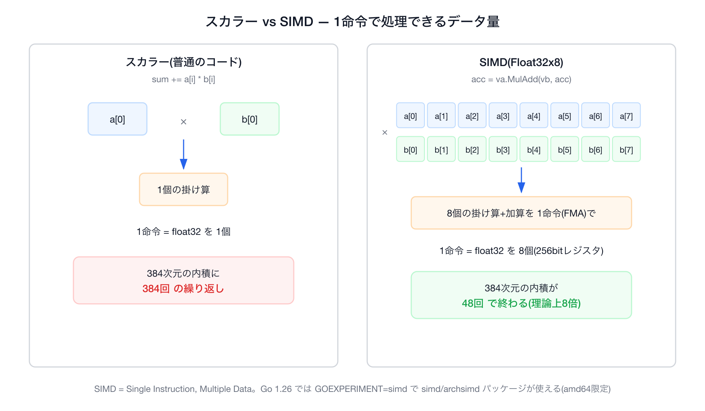
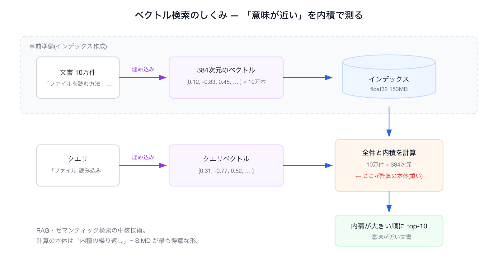
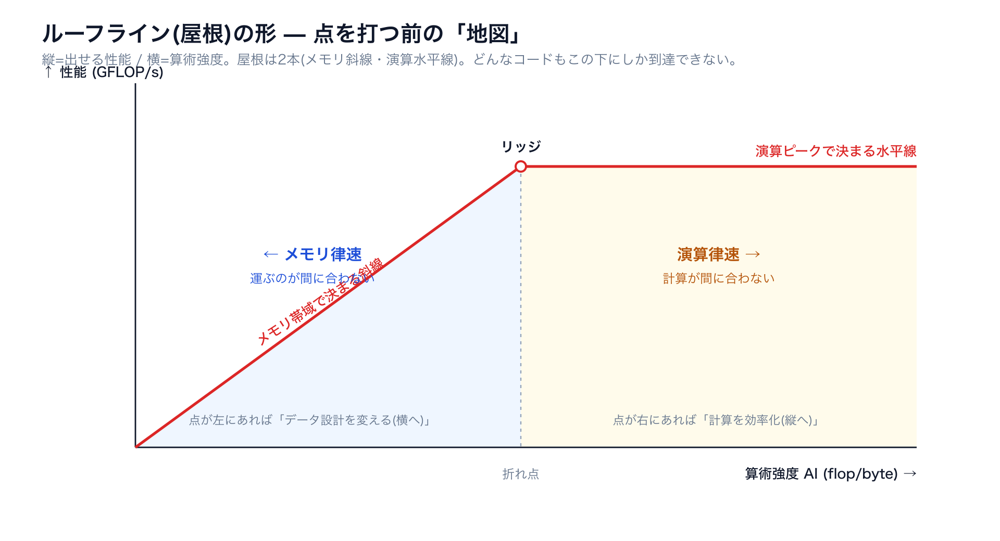
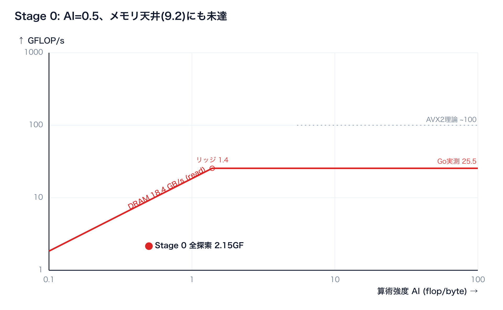
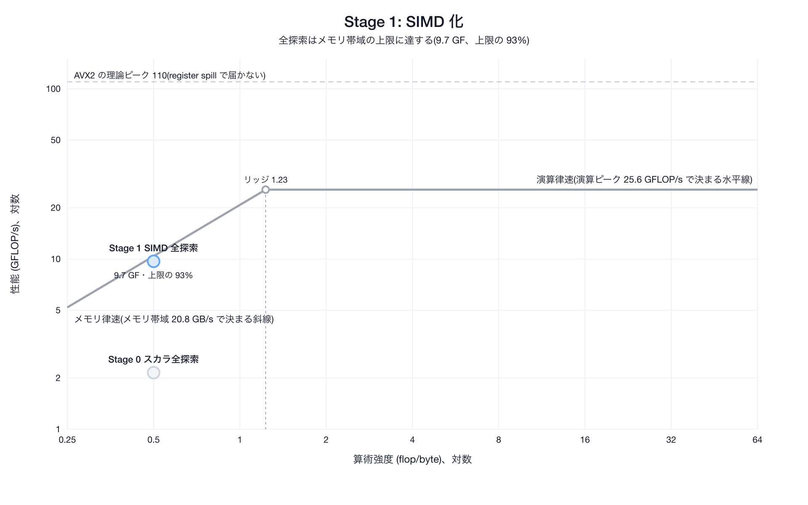
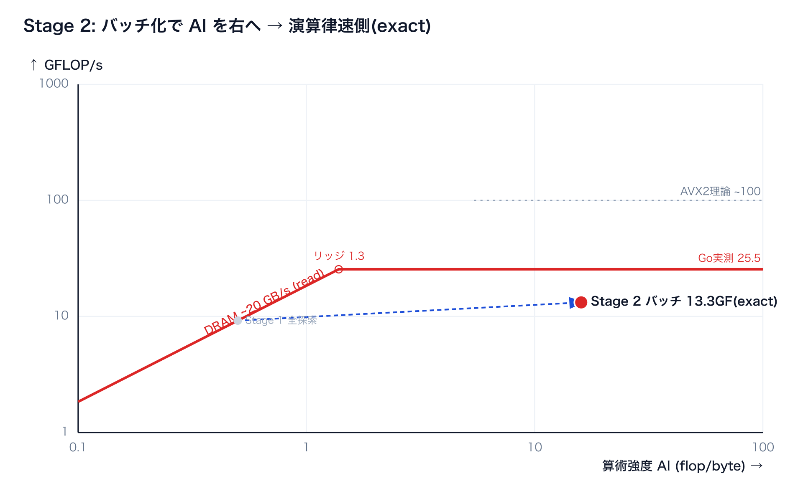
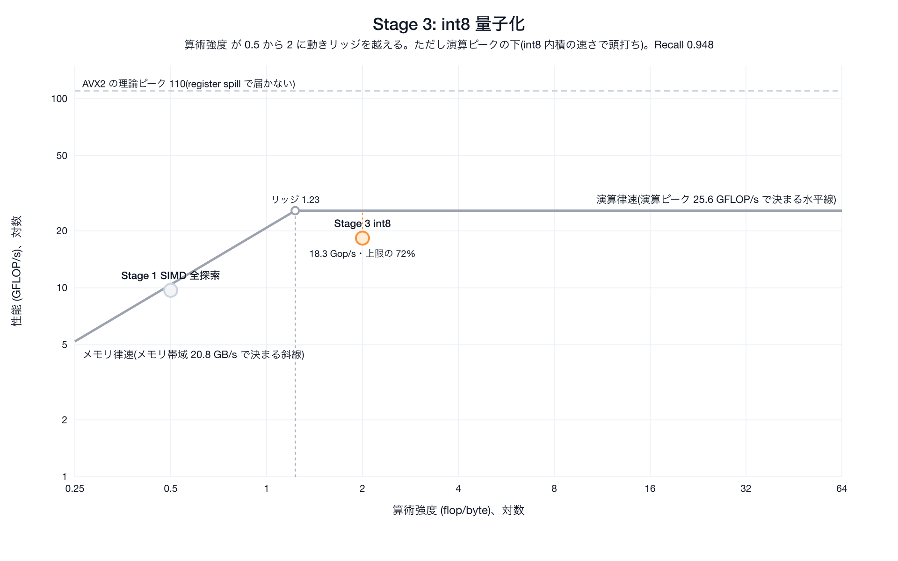
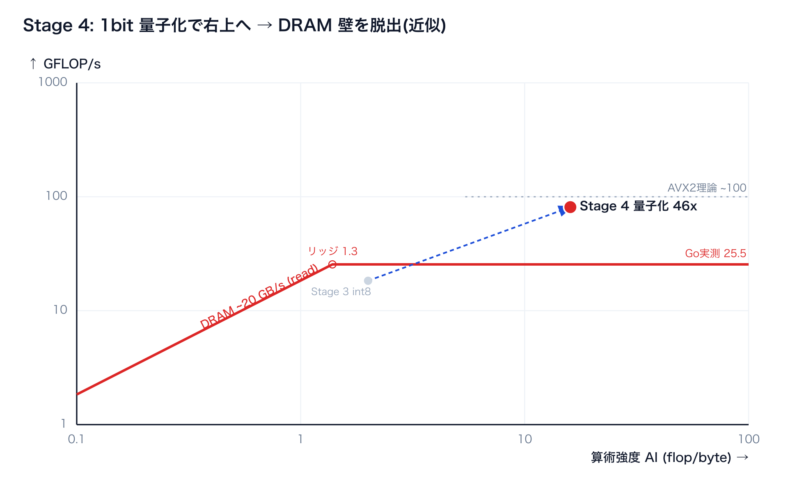
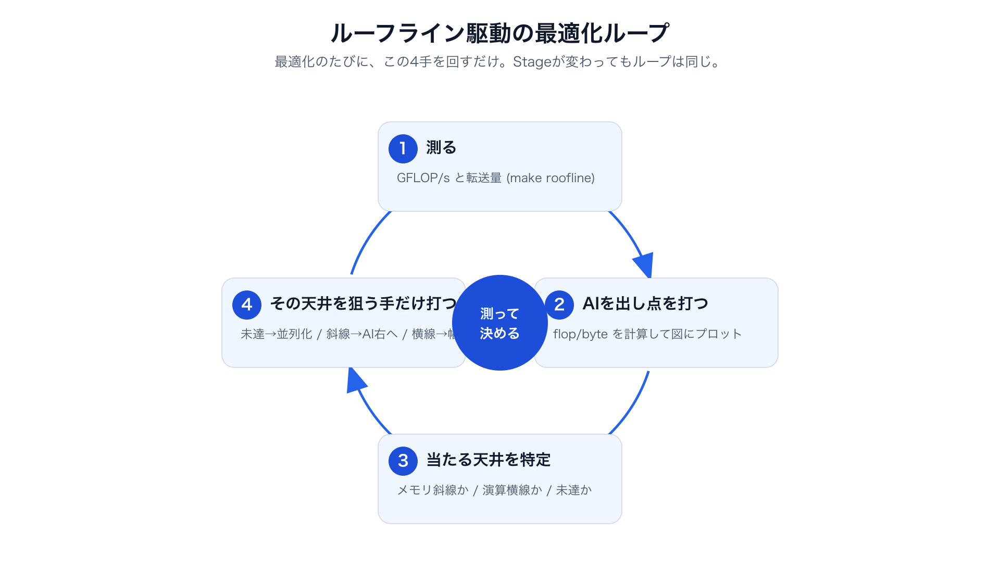
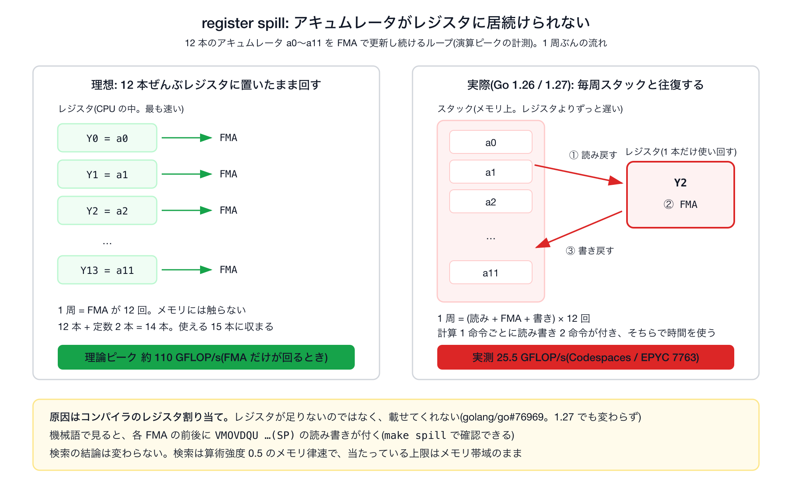

Roofline-driven optimization · Go 1.26 archsimd · AWS c7i 実測
Go 1.26 の実験的 SIMD で、外部ライブラリなしの Pure Go ベクトル検索を高速化します。ただし闇雲には触りません — ルーフラインという1枚の地図の上で「測る → 算術強度(AI)を出す → 当たっている天井を見る → その天井を狙う手だけ打つ」を繰り返します。
📖 専門用語(レジスタ / AVX / FMA …)に迷ったら、末尾の用語ミニ辞典(§12)へ。
⏱ 当日の最短ルート: §00 セットアップ → §03 ルーフラインモデル → §04 天井を計測 → §05 を make roofline で動かす → §07。時間がなければここだけでも流れが掴めます。
これは何か: Go 1.26 の標準 SIMD(simd/archsimd)を使い、外部ライブラリなしの Pure Go でベクトル検索を高速化する、読みながら手元で動かせる教材です(Go Conference 2026・40分ワークショップ)。題材は内積によるベクトル検索。ただ速くするのではなく、ルーフラインという地図の上で「いまどこが詰まっているか」を測り、打つ手を選ぶのが軸です。
何が学べるか:
対象と前提: Go の基礎が読めれば十分で、CPU アーキの予備知識は要りません(専門用語は §12 の辞典に)。読み方: 上から順に通読でき、各 Stage は「なぜ → コード → どうなったか」を実行コマンドつきで追えます。
SIMD が走るのは amd64(Intel/AMD)実機。一番楽なのは GitHub Codespaces(amd64・ゼロインストール)で、手元が Apple Silicon でもこれなら同じ数字が出ます。
① Codespaces(推奨) — リポジトリの Code → Codespaces → Create。.devcontainer/ に Go 1.26 + GOEXPERIMENT=simd が入っているので、開いたらすぐ:
② ローカル(amd64 Linux / Windows):
③ Apple Silicon Mac — arm64 では SIMD は走らず、スカラ版でテストだけ通ります(make GO=$(go env GOPATH)/bin/go1.26.4 test)。SIMD の数字は Codespaces か amd64 実機で(理由は §10)。Docker の --platform linux/amd64 は代用になりません(§10)。
必要なもの: Go 1.26 と make だけ。難しい設定は無く、GOEXPERIMENT=simd も Makefile が自動で付けます。
まず SIMD が無い世界から始めましょう。次の Go コードはベクトルの内積(かけ算の合計)です。
このループは「1個ずつ」処理します。a[i] と b[i] を1個取り出し、1回かけ算して、足す。CPU の命令レベルでも本当にそうで、1命令で float32 を1個しか扱いません。これをスカラ処理と呼びます。
SIMD(Single Instruction, Multiple Data)は、その名のとおり「1つの命令で複数のデータをまとめて」処理する CPU の機能です。CPU の中には普通の変数より大きなベクトルレジスタという入れ物があり、256bit のレジスタには float32(32bit)が 8個入ります。8個入れて掛け算命令を1回実行すると、8個分の掛け算が同時に終わります。この違いを図にすると次のとおりです。

384次元の内積なら、スカラで384回かかる掛け算が SIMD なら48回で済みます。理論上は8倍速いわけです。ただし「理論上」と断ったのには理由があります — 実際の速さは計算の速さだけでなくメモリからデータが届く速さにも左右されるからです。データが間に合わなければ、計算をいくら速くしても頭打ちになります。この差は §05 のルーフライン(カーネル単体 vs 全探索)で実測しながら確かめます。
Go 1.26 では GOEXPERIMENT=simd を付けてビルドすると simd/archsimd パッケージが使え、アセンブリも cgo も書かずにベクトル命令を直接叩けます。メソッド呼び出しがほぼそのまま1つの CPU 命令にコンパイルされます:
注意点:archsimd は今のところ amd64(Intel/AMD)専用。Apple Silicon の Mac(arm64)ではパッケージ自体が無く、スカラにフォールバックします。手元で SIMD を走らせたいときの選択肢は、下の環境コラムを参照(結論: Docker の amd64 でも代用できません)。
移植のための定石はビルドタグでの実装分け。//go:build goexperiment.simd && amd64 の SIMD 実装と、それ以外向けのスカラ実装(dot_fallback.go など)を用意し、hasSIMD が false なら DotNaive に退避させます(arm64 や Rosetta でも安全にビルド・実行できる)。そして VZEROUPPER だけは Go から直接出せないので、3行のアセンブリ vzeroupper_amd64.s を自作して呼んでいます — 「Pure Go で SIMD」と言いつつ、境界の1命令だけは .s が要るのが今の現実です。
SIMD の練習台にベクトル検索を選びました。RAG やセマンティック検索を支える中核技術です。
仕組みはシンプルで、文書もクエリも「埋め込みモデル」で数百次元の数値ベクトルに変換しておき、「クエリのベクトルと内積が大きい文書 = 意味が近い文書」として上位 k 件を返します。全体の流れを図にすると次のようになります。

つまり計算の本体は「内積を10万回計算する」こと。内積は掛け算と足し算の塊なので、SIMD が最も得意とする形です。だから世のベクトルDB(Faiss、Qdrant、ClickHouse…)はみんな内部で SIMD を徹底的に使っています。それを Pure Go で追体験しよう、というのが今回の趣旨です。本ページの題材カーネルは acc += a[i]*d[i](クエリ a と DB ベクトル d の内積)で、これを10万本ぶん回します。
ルーフラインモデルは、「このコードは何で遅いのか」を1枚の図で診断する性能モデルです(原典は Williams ら 2009、§09)。コードが遅いとき、原因は大きく2つに分かれます — 計算そのものが重い(演算律速)か、データの搬送待ち(メモリ律速)か。この2つは打つ手が正反対(前者は計算を減らす・速くする、後者は運ぶデータ量や回数を減らす)で、取り違えたまま手を入れても効きません。まずどちらで詰まっているかを見極める — それがルーフラインの役目です。
図は、縦軸に性能(GFLOP/s)・横軸に算術強度(AI ＝ 計算量 ÷ データ転送量)を取り、その機械の物理的な上限を屋根(ルーフ)として描きます。屋根は2本あります — 左側はメモリ帯域で決まる右上がりの斜線(運ぶのが間に合わない領域)と、右側は演算ピークで決まる水平線(計算が間に合わない領域)。どんなコードもこの屋根より上には行けません。そこに自分のコードを1点プロットすれば、屋根のどの部分の下にいるか ＝ 何で頭打ちかがわかり、「縦に上げる(実装を効率化)」のか「横へ動かす(データ設計を変えて AI を上げる)」のか、次の手が図から決まります。

例として §02 の内積カーネル(acc += a[i]*d[i])を、この図の上に置いてみましょう。横軸の位置を決めるのが算術強度 (AI) ＝ 「メモリから1バイト運ぶごとに、何回 計算するか」(flop/byte)です。内積は要素あたり mul 1 + add 1 = 2 flop、DB ベクトルを 4バイト(fp32)読むので 4 byte(クエリ側は10万件で使い回すのでキャッシュに残り、毎回は運びません):
AI=0.5 はとても小さい値です。いまの CPU はおおむね「1バイト運ぶ間に十数〜数十回」計算できる(＝リッジが十数 flop/byte あたりにある)ので、0.5 はリッジの遥か左 ＝ メモリ律速の領域に来ます。まだ1行も最適化していない段階で、「このカーネルは構造的にメモリ待ち。縦に上げるより AI を右へ動かすのが本命だ」と図が予言してくれる — これがルーフラインモデルの効きどころです。
では、このマシンの本物の天井(斜線と水平線が実際どこにあるか)はいくつなのでしょう。それを測って図を引くのが次章です。
前章の予言を確かめ、図を引くには、このマシンの天井そのものを知る必要があります。ルーフラインの天井は「理論ピーク(スペック式)」と「実測(マイクロベンチ)」の2系統で出せて、本ページは実測を採ります — これは LBNL の Empirical Roofline Toolkit や原典 Williams ら(2009)と同じ流儀(原典は §09)。すべて AWS c7i 上で make roofline-ceiling で再現できます。
リッジは屋根の折れ点で、天井 ÷ 帯域 = 240 / 11 ≒ 22 flop/byte(最上段のシリコン理論240基準)。前章で出した内積の AI=0.5 はこの遥か左 ＝ やはりメモリ律速で、この AI での上限は 0.5 × 11 = 5.5 GFLOP/s と確定します。演算天井は1本ではなく段階的(Go実測 39 / AVX2理論 120 / シリコン理論 240)にあり、図では最上段 240 を屋根に、39 と 120 をその下のサブ天井として描きます。
測り方(初めてでも再現できるレベルで):
これでこのマシンの屋根(斜線=11 GB/s、水平線=39/120/240、折れ点=22)が引けました。次章では、自分のコードの点をこの屋根の上に打って、Stage ごとに動かしていきます。
下が §04 で測った天井で引いた、このマシンの実測ルーフラインです(横軸=AI・縦軸=性能・斜線=メモリ天井・水平線=演算天井)。各 Stage の点が打ってあり、点をクリックすると当たっている天井と右側の Go コードに切り替わります(最初は Stage 0)。これから各 Stage で、この点を動かしていきます。
ここからは実際のコードと、動かして出る数字です。掲載は擬似コードではなく internal/vec / internal/index の実コードそのまま。手元で動かす手順:
計測のしくみ — make roofline が「図の点の座標」を出す仕組みも Go のベンチだけで完結しています。Go の testing で for b.Loop()(Go 1.24+)を回し、b.Elapsed() の実時間から GFLOP/s を計算、b.ReportMetric で自前の指標(AI・GFLOP/s)をベンチ出力の列として足すだけ。出力の AI と GFLOP/s がそのままルーフライン上の点 (x, y) になります。
// internal/index/bench_test.go — 全探索Stageの「点」を出す func reportFloatRoofline(b *testing.B, iters int) { sec := b.Elapsed().Seconds() flop := float64(benchN) * benchDim * 2 * float64(iters) // 2 flop/要素 bytes := float64(benchN) * benchDim * 4 // 4 byte/要素 b.ReportMetric(flop/sec/1e9, "GFLOP/s") // ← 点の y b.ReportMetric(2.0/4.0, "AI(flop/byte)") // ← 点の x (=0.5) b.ReportMetric(bytes/1e6, "MB/query") } func BenchmarkSearchNaive(b *testing.B) { benchSetup() b.SetBytes(benchN * benchDim * 4) // → 標準の MB/s 表示 iters := 0 for b.Loop() { // Go 1.24+ : 回数と計時を自動で面倒見る benchIx.SearchNaive(benchQ, 10) iters++ } reportFloatRoofline(b, iters) }
同じ要領で天井そのものも実測します(make roofline-ceiling)— FMA をレジスタ上で連打する BenchmarkPeakFLOP_AVX2 が演算ピーク、256MB を舐める BenchmarkPeakReadBW/TriadBW がメモリ帯域(詳しくは §04)。図の点も天井も、特別なプロファイラ無しに Go の標準ベンチだけで出しているのがポイントです。
なぜ: 最適化はまず基準点から。素朴に「1要素ずつ」内積を回し、図のどこに点が立つかを測ります。以降の手が効いたかは、この点からの移動で判断します。検索は全ベクトルと内積して上位 k 件を返すだけ。
// internal/vec/dot.go func DotNaive(a, b []float32) float32 { var sum float32 for i := range a { sum += a[i] * b[i] // 1個ずつ かけて 足す(前の sum に依存=直列) } return sum } // internal/index/index.go — 全探索 func (ix *Index) SearchNaive(q []float32, k int) []Result { t := newTopK(k) for id := 0; id < ix.N; id++ { // 10万ベクトル全部と内積 t.push(id, vec.DotNaive(q, ix.Vec(id))) } return t.results() }
どうなったか: 全探索 27.0 ms = 2.85 GFLOP/s、AI=0.5。図では左下、メモリ天井(5.5 GF)にすら届きません。なぜ天井未満か? 依存連鎖律速 — sum += ... は前の足し算が終わるまで次へ進めず、待ち時間(レイテンシ)がそのまま表に出ます。1個ずつ処理＝命令レベルの並列性ゼロです(384要素 × 加算レイテンシ約2サイクル ≒ 約190ns と概算でき、実測 188ns とほぼ一致します)。
→ 次の一手: ルーフラインの「どの天井にも未達なら命令並列性を上げる」に従い、同時に複数(SIMD)で縦に上ります。

なぜ: Stage 0 は命令並列性ゼロで天井にも未達だった。ルーフラインの指示は「縦に上れ＝命令並列性を上げろ」。そこで内積を Float32x8(8個同時)+ FMA に置き換えます。独立したアキュムレータ2本で FMA の待ち時間を隠し(1本だと前の結果待ちで直列化)、スライスを前進させて境界計算を減らす。最後の vzeroupper() が目立たないが重要(§07)。
// internal/vec/dot_simd.go (GOEXPERIMENT=simd, amd64) import "simd/archsimd" func Dot(a, b []float32) float32 { if !hasSIMD { return DotNaive(a, b) // arm64 等はスカラに退避 } var acc0, acc1 archsimd.Float32x8 // アキュムレータ2本で待ち時間を隠す for len(a) >= 16 { acc0 = archsimd.LoadFloat32x8Slice(a).MulAdd(archsimd.LoadFloat32x8Slice(b), acc0) acc1 = archsimd.LoadFloat32x8Slice(a[8:]).MulAdd(archsimd.LoadFloat32x8Slice(b[8:]), acc1) a = a[16:]; b = b[16:] // 前進(境界計算をループ条件に吸収) } var buf [8]float32 acc0.Add(acc1).StoreSlice(buf[:]) vzeroupper() // ★ SIMD→スカラ境界の掃除。Goは自動挿入しない sum := buf[0]+buf[1]+buf[2]+buf[3]+buf[4]+buf[5]+buf[6]+buf[7] for i := range a { // 8の倍数でない端数 sum += a[i] * b[i] } return sum }
どうなったか: カーネル単体は 188→41 ns = 4.6x 速くなりました。ところが全探索は 16.7 ms = 1.6x しか上がりません。なぜこれほど差が出るのでしょうか。図の上では別々の2点だからです — カーネル単体はデータが L1 にあるため演算側にまだ余地があり、全探索は DRAM から流し読みで AI=0.5 のままメモリの壁(9.2 GB/s)に張り付きます。図ではこの2つは別の場所(カーネルは右上、全探索は左)に置かれます。しかも途中には隠れ天井 VZEROUPPER があり、掃除すると 167→23ns まで改善します(§07)。
→ 結論: 縦はもう頭打ちで、幅を 8→16(AVX-512)に広げても天井は動きません。キャッシュブロッキングも効きません — DB ベクトルは各1回しか読まれず再利用が無いので、タイリングしても DRAM 読み出し総量は変わらないからです。次は「縦」ではなく「横」=AI を動かす番。AI を上げる道は2つ — ①再利用(クエリのバッチ化・exact) と ②バイト削減(量子化・近似)。まず① を Stage 2 で。
※ 上は要点。長さガードと「8幅の端数処理」を含む完全版は internal/vec/dot_simd.go。

なぜ: 全探索が メモリ律速なのは、DB ベクトル d を読んでも内積1回(2flop / 4byte)しかしないから。ならd を1回ロードして B 本のクエリ全部と内積すれば、同じ転送で計算が B 倍 → AI ≈ 0.5×B。B=32 で AI=16 となりリッジを越えて演算律速側へ。そこなら SIMD が効くはず — しかも精度はそのまま(exact)。事実上の GEMM 化(BLAS や Faiss のバッチ検索が速い理由)。
// internal/index/index.go — B本のクエリを1パスで処理(d のロードを再利用) func (ix *Index) SearchBatchSIMD(qs [][]float32, k int) [][]Result { tops := make([]*topK, len(qs)) for b := range tops { tops[b] = newTopK(k) } for id := 0; id < ix.N; id++ { d := ix.Vec(id) // ① d を1回ロード for b := range qs { // ② B本のクエリで使い回す(d はキャッシュ常駐) tops[b].push(id, vec.Dot(qs[b], d)) // SIMD内積 } } /* 各 tops[b].results() を返す */ }
どうなったか: B=32 で SIMD が exact 検索のまま 4.3x(scalar batch 19.3ms/query ↔ SIMD batch 4.49ms/query)。GFLOP/s は 4.67 → 17.1(3.7倍)、1クエリ 16.5ms → 4.49ms。B=1 の 1.6x からの一変は、再利用で AI を 0.5→16 に上げ演算律速にしたから — まさにルーフラインの「横(再利用)→縦(SIMD)が効く」。精度は一切犠牲にしていません(exact)。
(spill の 39GF 天井で 17GF 止まりだが、それでもスカラを 4.3x 引き離す)

なぜ: Stage 1 でメモリ斜線に張り付いた。ルーフラインの指示は「AI を右へ＝1バイトあたりの仕事を増やす(バイトを削る)」。キャッシュ戦略は再利用が無いので効かない → データ表現そのものを変えます。float32 を符号1bitに量子化すると 1ベクトル 1536→48 byte(1/32)。距離は内積をやめ、XOR+popcount のハミング距離(違うビット数)へ。
// internal/vec/hamming.go func Quantize(v []float32, out []uint64) { // float32 → 符号1bit for i, x := range v { if x > 0 { out[i/64] |= 1 << (i % 64) } } } func Hamming(a, b []uint64) int { // XOR + popcount = 違うビット数 var d int for i := range a { d += bits.OnesCount64(a[i] ^ b[i]) // OnesCount64 はスカラPOPCNT 1発=64次元/命令 } return d }
どうなったか: 153MB→4.8MB でキャッシュに乗り、DRAM の壁から脱出。0.62 ms = 43x。速さの源泉は SIMD ではなく「データを 1/32 にした」ことです。距離計算はスカラ POPCNT(64次元/命令)で足り、ここで AVX-512 の VPOPCNT を使っても速くなりません — 量子化後はキャッシュ常駐で popcount 律速ではなく、1ベクトルも6語と小さいから(実測 SearchBinarySIMD 0.75ms ≧ スカラ SearchBinary 0.68ms)。これは Stage 1 と同じ「計算で詰まっていない所では SIMD は効かない」というルーフラインの一貫した教訓です。
しかも、これは無条件の勝利ではありません。 1bit に潰した代償で精度が大きく落ち、Recall@10 = 0.18(正解10件のうち2件弱しか当たらない)。43x は「正確な検索」を速くしたのではなく、近似に問題をすり替えた数字で、このままでは実用になりません(exact な Stage 0/1/2 とは別タスク)。
→ 次の一手: 速さは保ったまま精度を取り戻す。そこで SIMD が主役として戻ってきます(Stage 4)。

なぜ: Stage 3(量子化)は速いが Recall 0.18 で使い物にならない。速さは量子化で確保したまま、精度だけ取り戻したい。作戦は2段構え — 1bit のハミング距離で粗く候補を絞り(速い)、その少数の候補だけを fp32 の正確な内積で採点し直す(正確)。絞った後なので fp32 はキャッシュに乗り、追加コストは小さい。
// internal/index/index.go func (ix *Index) SearchBinaryRerank(q []float32, k, factor int) []Result { cands := ix.SearchBinary(q, k*factor) // ① 1bitで粗く k×factor 件に絞る(速い・不正確) t := newTopK(k) for _, c := range cands { t.push(c.ID, vec.Dot(q, ix.Vec(c.ID))) // ② fp32 SIMD内積で採点し直す ← Stage 1 のカーネル! } return t.results() }
どうなったか: Recall@10 0.18 → 0.87、速度は 0.67 ms ≈ 40x(ほぼ量子化のまま)。ここで効いている vec.Dot はStage 1 で書いた SIMD カーネルそのもの。つまり SIMD は「不要」だったのではなく、「速くて正確」を成立させる精度側の主役でした。
これが実運用のベクトル検索の定石(量子化で粗く絞る → 高精度な距離で rerank。Faiss / Qdrant / ClickHouse QBit と同系統)。速度(量子化＝横) × 精度(SIMD内積＝縦)の二本柱で、はじめて「速くて正確」に届きます。

なぜ: Stage 2 でキャッシュに乗った後、さらに右上(演算律速側)へ行くには? 引き出しは3つ。int8 量子化(転送4→1byte で AI をもう一段上げる)、クエリのバッチ化(DB1本のロードを B回再利用 → AI≈0.5×B、リッジを越えて演算律速側=実質 GEMM 化。ここで初めて幅・FMA が再び効く)、変えた表現の上でまた効く AVX-512 VPOPCNT(Uint64x4.OnesCount)。どうなる(想定): 図ではさらに右上へ動く(数値は卓上)。本リポでは未実装で、ルーフラインモデルの延長として示します。
Stage 0→1 は「縦線上を上る(実装効率)」、Stage 2 は「横に動く(データ表現)」という別軸の動き。ルーフラインはこの2軸を一枚で見せてくれるのが価値で、「壁に張り付く → 右へ逃げる」の流れが図のトレースとして辿れる。この4手のループを図にまとめると次のとおりです。

ここまで何度か「(§07)」と先送りしてきた2つの隠れ天井を片付けます。どちらもハードの限界ではなく Go 1.26 archsimd のコード生成がまだ若いことの表れで、同根です。
症状: Stage 1 で内積カーネルを SIMD 化したのに、全探索の見かけの帯域が妙に低い(5.7 GB/s)。カーネル単体も 167ns で頭打ち。ところが境界にたった1命令 VZEROUPPER を置くだけで 167→23ns = 7.1x 速くなり、帯域の見かけの壁も消えました。
なぜ起きるか: AVX2 命令(Float32x8 の FMA など)を使うと YMM レジスタの上位128bitが「dirty(汚れた)」状態になります。その直後、水平和の sum = buf[0]+buf[1]+… はスカラの float32 計算で、Go はこれをレガシー SSE 命令で出力します。この「dirty な YMM 上位 × レガシー SSE」の組み合わせが CPU にペナルティを発生させる。VZEROUPPER は上位128bitをゼロに掃除する1命令で、境界で一度呼べばこの税金が消えます(命令自体のコストは小さく、差し引きで大きく得をする — ただし後述のとおりベンダー差はある)。
ペナルティの正体(世代で違う・ここ重要): 教科書でよく語られる「一度きりの大きな遷移ペナルティ(上位状態をセーブ/リストアするモード切替)」は Sandy/Ivy Bridge〜Haswell 世代の挙動です。Skylake 以降の modern Intel では仕組みが変わり、もう上位状態を保存せず、dirty 状態で実行するレガシー SSE 命令1個ごとに false dependency(上位ビットへの偽の依存)+ マージ(blend)μop が挿入される形になっています。本ページのテスト機 AWS c7i(4th Gen Xeon Scalable = Sapphire Rapids)はまさにこの後者で、実測した「呼び出しごとの固定費 ≒145ns(550cyc)」は、この per-instruction ペナルティの蓄積を VZEROUPPER がまとめて消していると読むのが正確です。
Go 固有の事情: Go 1.26 の archsimd はこの VZEROUPPER を自動挿入しません。本来コンパイラが境界を管理して入れてくれることを期待したいところで、実際 golang/go#77647 でも「intrinsics はコンパイラ管理だから VEX 遷移は面倒を見てくれるはず…?」という未解決の問いとして挙がっています。現状 objdump で生成コードを見ても VZEROUPPER は1個もなく、3行のアセンブリ vzeroupper_amd64.s を自作して境界で呼ぶのが回避策。下の register spill と同根のコード生成の未熟さで、これも将来 Go 側で解消される見込みです。
どこまで確かか(正直に): 「VZEROUPPER 1命令で同一コードが 7倍速くなった」は実測で確認済み(167→23ns)。ただし効果の大きさはベンダー・世代依存で、本ページの値は modern Intel(Sapphire Rapids)のもの。AMD Zen には Intel 型の遷移ペナルティが基本的に無く、むしろ VZEROUPPER 自体が高コストな世代もある(=同じ7倍は出ない)。また 550cyc の固定費を命令単位まで分解したわけではなく、dim スケーリングで固定費を分離 → VZEROUPPER 投入で7倍を確認、という状況証拠による特定です。生ログは ../dev/OPTIMIZATION_LOG.md の Step 4。
演算天井(AVX2)は理論 ~120 GFLOP/s(2 FMA/cyc × 8レーン × 2flop × 3.75GHz)。実測は 39 GF = その約1/3(33%、0.65 FMA/cyc)。AI=0.5 の深いメモリ律速なのでこの低さは結論を変えないが、原因は面白い。objdump で内側ループを見ると、独立なはずのアキュムレータ12本(4本版でも同様)が全部レジスタに置けず、毎回スタックへ退避(register spill)され、同じ1本のレジスタを使い回していた。FMA 1個ごとに load+store が必ず付くので、(1) load/store ポートが先に飽和し、(2) 次の周回の load が今回の store を待つ(store-to-load forwarding 〜5〜7cyc)。アキュムレータを増やすほど隠れるので 4本=23GF < 12本=39GF と増える — 「待ち時間律速」の指紋です。これを図にすると次のとおりです。

register spill = レジスタに収まらない/置けない値をメモリ(スタック)へ追い出すこと。これはハードの限界ではなく Go 1.26 archsimd のレジスタ割り当ての未熟さ(VZEROUPPER を自動挿入しないのと同根のコード生成課題)。既知 issue golang/go#76969 と同件で、レジスタ割り当ての改善は #78753 など Go 1.27 で進行中 — 将来この 39GF は上がる見込み。生ログは ../dev/OPTIMIZATION_LOG.md の Step 6/6b。
どこまで確かか(正直に): 確認できたのは 「spill が存在する」(objdump で 4本・12本とも FMA に load+store が付く ＋ 上流 issue #76969)と、メモリポート律速の見積り(〜0.6 FMA/cyc)が実測 0.65 とほぼ一致する点まで。「spill さえ消せば理論ピークに届く」は未検証 — Go 1.26 archsimd は常に spill し Go コードでは消せないため、VZEROUPPER のような「1命令足したら7倍」の決定的な介入実験ができていない。よって本節は強い状況証拠による推定であって断定ではない。
objdump の読み方(3点だけ): ①1行は「アドレス / 命令バイト列 / ニーモニック(命令名) オペランド」。(SP) はスタック上の場所。②VMOVDQU=ベクトルのコピー(メモリ⇄レジスタ)、VFMADD…PS=FMA。③落とし穴: go tool objdump は新しめの命令(VEX系)を誤訳し、FMA が TESTL $0xd1, AL のような化けで表示されます — 正体は左のバイト列(c4e2…)を見れば分かります。Linux の objdump -d なら正しく表示されます。
スピルの見分け方: ループ内で演算ごとに「(SP)→レジスタ の load」と「レジスタ→(SP) の store」がセットで並んでいたら、値をレジスタに保持できず毎回スタックを往復している証拠 = register spill。理想は load/store が消えてFMA だけが並ぶ。
全体を貫く地図がルーフラインでした。「縦に上る(実装効率: SIMD・アキュムレータ・VZEROUPPER)」と「横に動く(データ表現: 量子化)」は別軸の動きで、Stage 1 でメモリの壁に張り付いた瞬間に「次は縦ではなく横」と図が手を選んでくれました。個別の学びは:
そして核心 — SIMD は「だけ」でも「不要」でもなく、“どこで効くか”が全て。ルーフラインがその場所を当ててくれます:
まとめると速度は 「AI を上げて演算律速にして SIMD を効かせる」(再利用＝バッチ / バイト削減＝量子化 ＝横)× 「精度は SIMD 内積」(縦) の二本柱。実運用のベクトルDB(Faiss / Qdrant / ClickHouse QBit)と同じ設計で、ルーフラインがどちらの軸を打つべきかを一枚で教えてくれます。SIMD 抜きでは「速いが使えない(Recall 0.18)」止まり — 「速くて正確」は、exact なバッチ(Stage 2)と rerank(Stage 4)の SIMD があって初めて成立します。
archsimd は AMD64 専用。ARM64 では //go:build amd64 でSIMD実装を分け、スカラ版へフォールバックさせる構成にする。当日は AMD64 ランナー(Codespaces / AWS c7i)上の共有環境を一つ用意しておくと、手元のアーキ差を気にせず同じルーフライン図に全員で点を打てる。
docker run --platform linux/amd64 を使えば実際の x86 で測れる——と思いがちだが、これは落とし穴。中身は QEMU エミュレーション(または Rosetta 経由)で、実際の x86 CPU ではない。具体的には:
Go は長らく SIMD を言語機能として持たず、使うにはアセンブリ(.s)か cgo が必要でした(標準ライブラリの暗号やmath系は手書き .s で SIMD 化していた)。標準パッケージ化の流れ:
つまり層は2つになる予定です。simd/archsimd(低レベル・アーキ固有。Float32x8 等が特定の CPU 命令に 1対1 対応。本ページが使うのはこちら)と、simd(将来の移植可能 API。同じコードが amd64/arm64 で動く想定)。いずれも当面は実験的(GOEXPERIMENT=simd)で、API もコード生成も発展途上です。本ページの VZEROUPPER 未挿入(§07)や register spill は、標準ライブラリがまだ若いことの表れでもあります。
本文で出てくる用語
縦に上る = 実装効率(命令並列性・幅・FMA・VZEROUPPER)｜ 横に動く = データ表現/アルゴリズム(量子化・バッチ化)
※ 実測: AWS c7i.large / Xeon 8488C / Go 1.26.4 / 10万ベクトル×384次元(2026-06-13)。演算ピークは Go実測39/シリコン理論240、持ち帰り章のみ卓上。
func DotNaive(a, b []float32) float32 { var sum float32 // アキュムレータ1本 for i := range a { sum += a[i] * b[i] // 直前のsumに依存 → 加算レイテンシが直列化 } return sum }
// 要点(完全版・実行コマンド・数字は §05)。Float32x8 + FMA、acc 2本 var acc0, acc1 archsimd.Float32x8 for len(a) >= 16 { acc0 = archsimd.LoadFloat32x8Slice(a).MulAdd(archsimd.LoadFloat32x8Slice(b), acc0) acc1 = archsimd.LoadFloat32x8Slice(a[8:]).MulAdd(archsimd.LoadFloat32x8Slice(b[8:]), acc1) a = a[16:]; b = b[16:] } vzeroupper() // ★ SIMD→スカラ境界の掃除(Goは自動挿入しない)
// internal/vec/hamming.go — float32 → 符号1bit (1ベクトル 1536→48 byte = 1/32) func Quantize(v []float32, out []uint64) { for i, x := range v { if x > 0 { out[i/64] |= 1 << (i % 64) } } } // 距離は XOR+POPCNT のハミング距離。スカラ POPCNT 1発=64次元/命令で足りる(この小ささ・キャッシュ律速では SIMD VPOPCNT でも速くならない) func Hamming(a, b []uint64) int { var d int for i := range a { d += bits.OnesCount64(a[i] ^ b[i]) } return d } // 153MB→4.8MB でキャッシュ常駐 → DRAM律速を脱出。43x
// internal/index/index.go — B本のクエリで d のロードを再利用(AI 0.5→16) for id := 0; id < ix.N; id++ { d := ix.Vec(id) // ① d を1回ロード for b := range qs { // ② B本で使い回す(d はキャッシュ常駐) tops[b].push(id, vec.Dot(qs[b], d)) // ★ Stage1のSIMDカーネルが exact のまま効く } } // AIが上がり演算律速側へ → SIMDが効く。精度は一切犠牲にしない(exact)
// 持ち帰り①: 変えた表現(binary)の上でまた SIMD が効く // AVX-512 VPOPCNT。AVX512VPOPCNTDQ が要る func HammingSIMD(a, b []uint64) int { var acc archsimd.Uint64x4 for i := 0; i+4 <= len(a); i += 4 { va := archsimd.LoadUint64x4Slice(a[i:]) vb := archsimd.LoadUint64x4Slice(b[i:]) acc = acc.Add(va.Xor(vb).OnesCount()) } vzeroupper() return hsum(acc) + tail(a, b) } // 持ち帰り②: クエリ B 本をまとめて DB ロードを再利用 → AI ≈ 0.5×B // B を上げるとリッジを越え、演算律速側(GEMM)へ移る